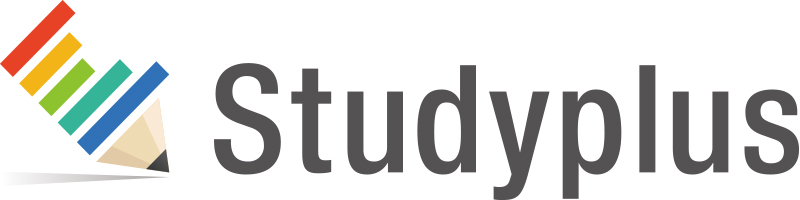
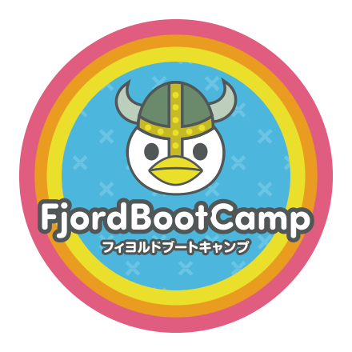

こんにちは世界！
10回目の Rails Girls Tokyo が開催されます!
Ruby on Railsのすてきな世界を私達と一緒に体験しましょう！
第10回 Rails Girls Tokyo の参加者を募集します。
2日間のワークショップとなります。
無料のワークショップですので、お気軽にご参加ください。
応募を開始しました！！！
こちらからご応募ください。
概要 コーチに教えてもらいながらプログラムを設計して、プロトタイプを作り、コーディングします。
必要なもの 自分のノートパソコン、やる気とキラリと光るイマジネーションを持ってきてください！
コーチ募集は終了しました。たくさんのコーチのお申し出をいただき、ありがとうございました。
| 19:30 - 21:30 |
インストール・ ディまずは、参加者同士、お互いに知り合いになりましょう。ご自分のノートパソコンをお持ちください。 それぞれのパソコンにRubyとRailsをインストールし、Rubyプログラミングの最初の一歩をコーチとともに始めてみましょう。 |
|---|
| 9:00 - 10:00 |
レジストレーション、コーヒー金曜日にRuby on Railsのインストールトラブルがあれば、朝のうちに解決しておきましょう。 金曜日にすべてうまく行ったひとは参加しなくてもOKです。9:30ごろからのんびりきてください。 |
|---|---|
| 10:00 - 10:30 |
開会一日の流れの説明。オーガナイザーから一言。Friday Hugs! |
| 10:35 - 11:00 |
自己紹介一緒のチームのみんなに自己紹介しましょう! |
| 11:00 - 11:50 |
ワークショップ ー ウェブアプリの構築はじめてのウェブアプリにトライしてみよう！ |
| 11:50 - 12:00 |
休憩 |
| 12:00 - 13:00 |
ワークショップ ー ウェブアプリ構築 |
| 13:00 - 14:00 | ランチ |
| 14:00- 14:40 |
スポンサーLT |
| 14:40 - 16:30 |
ワークショップ自分流のウェブアプリに変えてみよう！ |
| 16:30 - |
アフターパーティー & コーチによるライトニングトークス参加者、コーチ、スタッフによるパーティです。ワークショップで聞き損ねたことや RubyやRailsのこと、ステップアップの方法など、コーチに気軽に質問してみましょう。 |
会場:
クックパッド株式会社
地図
東京都渋谷区恵比寿4-20-3
恵比寿ガーデンプレイスタワー12F
ご支援いただけるパートナーを募集しております。 こちらのフォームからご応募ください。
Rails Girls Tokyo は以下のすばらしいパートナーとの共同開催です。
 クックパッド は、「毎日の料理を楽しみにする」という理念のもと、1998年3月に料理レシピの投稿・検索サービス「クックパッド」を開始しました。現在の投稿レシピ数は260万品を超え、日本では月間6,300万人以上にご利用いただいています。
クックパッド は、「毎日の料理を楽しみにする」という理念のもと、1998年3月に料理レシピの投稿・検索サービス「クックパッド」を開始しました。現在の投稿レシピ数は260万品を超え、日本では月間6,300万人以上にご利用いただいています。
 GMOペパボ株式会社「もっとおもしろくできる」を企業理念に、レンタルサーバーサービス「ロリポップ！」や
国内最大のハンドメイドマーケット「minne」など様々なサービスを提供しています。RubyやRailsを採用した開発環境で「いるだけで成長できる環境」をコンセプトにエンジニアの人材育成やコミュニティへの支援を積極的に行っています。
GMOペパボ株式会社「もっとおもしろくできる」を企業理念に、レンタルサーバーサービス「ロリポップ！」や
国内最大のハンドメイドマーケット「minne」など様々なサービスを提供しています。RubyやRailsを採用した開発環境で「いるだけで成長できる環境」をコンセプトにエンジニアの人材育成やコミュニティへの支援を積極的に行っています。
 みんなのウェディングは、結婚式・結婚式場を口コミや本物の費用明細を使って選ぶことができるウェブサービスを運営しています。サービス運営のために、新卒で入社した場合、研修から実際の業務を担当するまでに約一年ぐらいかけて育成する環境を作っています。
みんなのウェディングは、結婚式・結婚式場を口コミや本物の費用明細を使って選ぶことができるウェブサービスを運営しています。サービス運営のために、新卒で入社した場合、研修から実際の業務を担当するまでに約一年ぐらいかけて育成する環境を作っています。
 スタディプラス株式会社は、「学ぶ喜びをすべての人へ」をミッションに掲げる、EdTech(教育×IT)企業です。 学習管理SNS「Studyplus」は、学習内容を記録・可視化・共有することにより、モチベーションを維持・向上し、 学習の習慣化を補助するアプリです｡ 累計ユーザー数は300万を超え、毎年大学受験生の3人に1人以上が利用している学びのプラットフォームです。
 フィヨルドブートキャンプは、プログラマーになりたい人のためのスクール・就職支援サービスです。RailsGirlsを終えてから本格的にプログラマーになりたい人には最適の実践的なスクールです。
 株式会社SmartHR社会保険・労働保険それ自体はすばらしい制度ですが、手続きの不便さ、煩雑さ、わかりづらさは否めません。 私たちはこのアナログな領域を、テクノロジーと創意工夫でもっとシンプル、かんたん、便利に変えていきます。 経営者は本業に、人事担当者は採用や制度づくりに集中でき、従業員はよりよい環境で安心して働くことができる社会を
私達は SmartHR で実現します。
株式会社SmartHR社会保険・労働保険それ自体はすばらしい制度ですが、手続きの不便さ、煩雑さ、わかりづらさは否めません。 私たちはこのアナログな領域を、テクノロジーと創意工夫でもっとシンプル、かんたん、便利に変えていきます。 経営者は本業に、人事担当者は採用や制度づくりに集中でき、従業員はよりよい環境で安心して働くことができる社会を
私達は SmartHR で実現します。
 GitHub はソフトウェアの共同開発をするための最高の環境を開発・提供しています。1000 万人以上のユーザーが友だち、同僚、クラスメートと、時にはまったく知らない人とでさえ、コードなどを共有して素晴らしいプロジェクトを行っています。
GitHub はソフトウェアの共同開発をするための最高の環境を開発・提供しています。1000 万人以上のユーザーが友だち、同僚、クラスメートと、時にはまったく知らない人とでさえ、コードなどを共有して素晴らしいプロジェクトを行っています。
 日本Rubyの会は、Rubyの利用者の支援とRuby(とRubyのライブラリ)開発者の支援を目的とした一般社団法人です。現在は、ドキュメントの整備や、イベントへの参加協力等を中心に活動しています。
日本Rubyの会は、Rubyの利用者の支援とRuby(とRubyのライブラリ)開発者の支援を目的とした一般社団法人です。現在は、ドキュメントの整備や、イベントへの参加協力等を中心に活動しています。
参加費はどのくらいかかりますか？ 無料です。申し込むときにはわくわくした気持ちだけあればいいです。
どのような人が参加するのでしょうか？ コンピュータを使ったことがある女性ならだれでも参加できます。これまでに開催されたRails Girlsイベントには様々な年齢の女性がやってきました。ご自分のノートパソコンをお持ちください。
男性も参加できますか？ 参加できます。ただし、必ずウェブアプリを作りたがっている女性と一緒に参加してください。申し込み人数が多い場合はお断りすることがあります。
プログラミングの経験があります。手伝うことはできますか？ たくさんのご協力のお申し出をいただきまして、ありがとうございました！ 現在、コーチの募集は終了しております。次回以降のRails Girlsのコーチにご興味をおもちの方は、オーガナイザーまでお声がけ下さい。
 Keiko Kaneko
Keiko Kaneko Mayumi Emori
Mayumi Emori Saya Horibe
Saya Horibe Ai Kiriyama
Ai Kiriyama